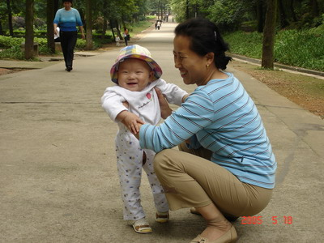
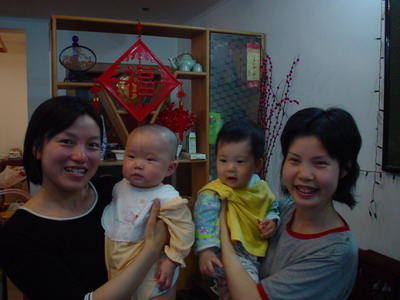

前半个月曼曼是在长沙度过的。曼曼在长沙的日子过得十分滋润，基本上每天都要去烈士公园里遛弯，曼曼在长沙最喜欢和乐乐哥哥玩。对外婆先是有几天认生，然后就变得十分友好。爸爸妈妈的新房子已经装修好了，下次回长沙的时候，应该就已经搬家了。

在外婆借来的小车里，曼曼扶着扶手自己就站起来了。这是她第一次站起来。
曼曼到李慧家去做客，抢越越的玩具，还挺霸道。我和李慧真是太有缘了，大学时是最好的朋友，又几乎是同时有了孩子。这是我们当妈妈以来第一次见面。虽然聊天时已经是完全不同的话题，但也许因为彼此相似的经历吧，感觉仍是十分熟稔，毫无隔阂。

曼曼和越越
回北京后曼曼打了麻疹疫苗。过了一周，曼曼对疫苗出现了不适的反应，发烧，同时身上出一身像蚊子咬的包似的红疙瘩。其实，对疫苗不适是我自己总结的，我在网上查到有类似的资料，而且有几个同事的孩子也是打完针差不多时间有类似的反应。但是去医院的时候，大夫对我的说法十分不屑，说肯定和麻疹疫苗没关系。在医院给曼曼验了血，当时白血球有些低。医生说是病毒感染，但是也说不出是什么病毒，开了一堆抗病毒的药，还开了一个升高白血球的药，说明书上的副作用写的有点吓人。我和郭嘉没敢给曼曼吃这些药。所幸曼曼很争气的当天下午自己就退烧了，而且以后体检也一切正常。难怪有那么多人不相信医生！
一段时间以来，曼曼一直想爬可是爬不动，老是把屁股拱的特别高。这次发烧好了之后，过了两天曼曼突然会爬了，手脚并用爬得可快了。曼曼现在一点都不老实，一会儿爬来爬去，一会儿自己扶着小床栏杆或是窗台站起来，一刻也不能离人。
曼曼快满9个月的时候会叫“奶奶”了。